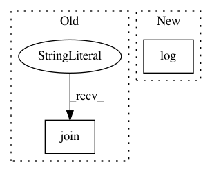

19db3e8350cefa14a282073c6837ef1b5263f309,reframe/core/schedulers/slurm.py,SlurmJobScheduler,_merge_files,#SlurmJobScheduler#Any#,258
Before Change
"merging job array output files: %s" % ", ".join(out_glob))
osext.concat_files(job.stdout, *out_glob, overwrite=True)
getlogger().debug(
"merging job array error files: %s" % ",".join(err_glob))
osext.concat_files(job.stderr, *err_glob, overwrite=True)
def filternodes(self, job, nodes):
After Change
with osext.change_dir(job.workdir):
out_glob = glob.glob(job.stdout + "_*")
err_glob = glob.glob(job.stderr + "_*")
self.log(f"merging job array output files: {", ".join(out_glob)}")
osext.concat_files(job.stdout, *out_glob, overwrite=True)
self.log(f"merging job array error files: {", ".join(err_glob)}")
osext.concat_files(job.stderr, *err_glob, overwrite=True)
In pattern: SUPERPATTERN
Frequency: 3
Non-data size: 2
Instances
Project Name: eth-cscs/reframe
Commit Name: 19db3e8350cefa14a282073c6837ef1b5263f309
Time: 2020-11-03
Author: karakasis@cscs.ch
File Name: reframe/core/schedulers/slurm.py
Class Name: SlurmJobScheduler
Method Name: _merge_files
Project Name: eth-cscs/reframe
Commit Name: f8fb2e526ce6cf64f72e52ba7bf2bb8763513c08
Time: 2021-02-01
Author: karakasis@cscs.ch
File Name: reframe/core/schedulers/slurm.py
Class Name: SlurmJobScheduler
Method Name: submit
Project Name: pantsbuild/pants
Commit Name: c2425c81ddddf996b3aea6bf422031446382e245
Time: 2015-11-04
Author: john.sirois@gmail.com
File Name: contrib/go/src/python/pants/contrib/go/tasks/go_buildgen.py
Class Name: TemplateResult
Method Name: log